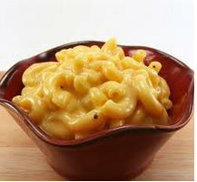

French Onion Mac and Cheese

A delicious Mac and Cheese dish with a taste of French onions!
An upscale mac and cheese! Don't skimp on the cheese! It makes the mac and cheese taste amazing!
Ingredients:
- 4 Tablespoons unsalted butter
- 2 Large Onions
- Macaroni
- Cheese
Instructions:
- Melt the butter
- Bring water to a boiling point
- Put the ingredients in and cook
- Drain water and serve, wait untill cooled to eat.
Return home